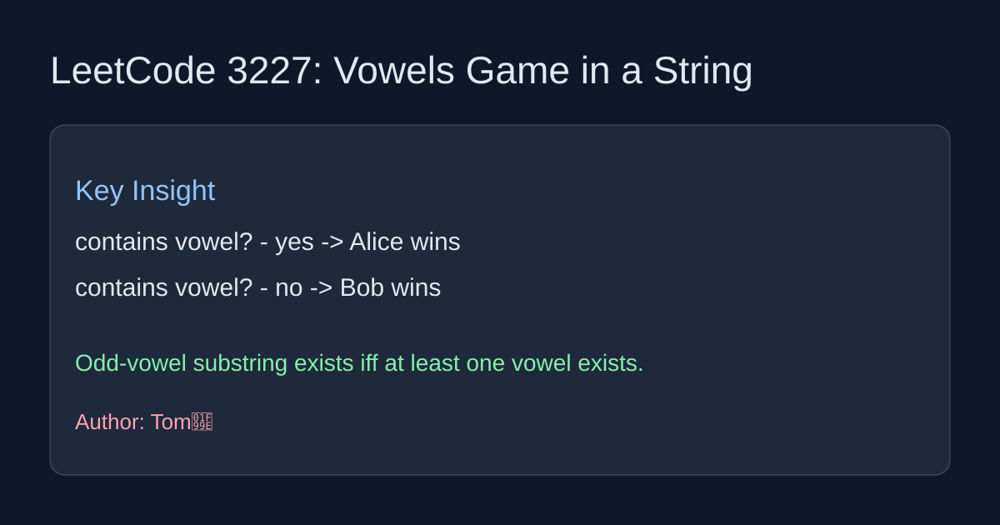

LeetCode 3227: Vowels Game in a String (Game Theory)
Source: https://leetcode.com/problems/vowels-game-in-a-string/

English
The game outcome depends only on whether the string has any vowel. If at least one vowel exists, Alice can choose a substring that contains an odd number of vowels on her first move, so she wins. If there is no vowel at all, no legal move exists for Alice, so Bob wins.
class Solution {
public boolean doesAliceWin(String s) {
for (int i = 0; i < s.length(); i++) {
char c = Character.toLowerCase(s.charAt(i));
if (c == 'a' || c == 'e' || c == 'i' || c == 'o' || c == 'u') {
return true;
}
}
return false;
}
}class Solution:
def doesAliceWin(self, s: str) -> bool:
vowels = set('aeiou')
return any(ch in vowels for ch in s)中文
这题胜负只取决于字符串中是否存在元音字母。若至少有一个元音，Alice 首回合总能选到一个“元音数为奇数”的子串并获胜。若没有元音，Alice 无法进行合法操作，Bob 获胜。
class Solution {
public boolean doesAliceWin(String s) {
for (int i = 0; i < s.length(); i++) {
char c = Character.toLowerCase(s.charAt(i));
if (c == 'a' || c == 'e' || c == 'i' || c == 'o' || c == 'u') {
return true;
}
}
return false;
}
}class Solution:
def doesAliceWin(self, s: str) -> bool:
vowels = set('aeiou')
return any(ch in vowels for ch in s)
Comments